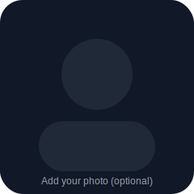

I’m currently employed and building a public portfolio to document my growth toward a future Data Scientist role. This site showcases selected projects, my workflow, and what I’m learning next.
Tip: keep this list short and link each item to a dedicated project page.
Location: Mexico (Remote/Hybrid)
Languages: English (advanced), Spanish (native)
Interests: data storytelling, experimentation, business impact
Photo is optional but recommended by Career Prep.